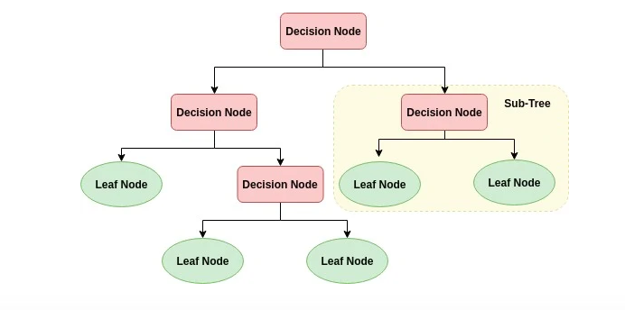
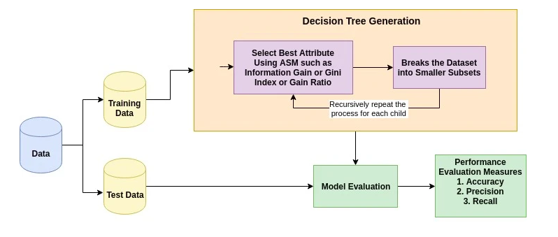
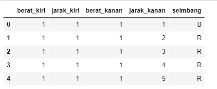
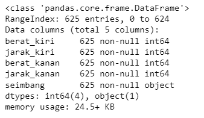
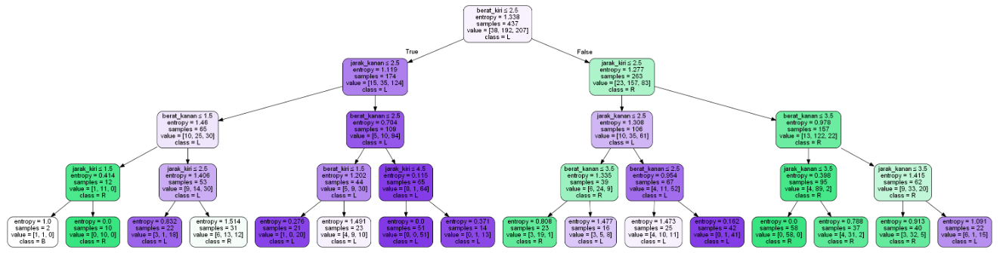

Decision Tree Classification¶
Pohon keputusan adalah struktur pohon seperti bagan di mana simpul internal mewakili fitur (atau atribut), cabang mewakili aturan keputusan, dan setiap simpul daun mewakili hasilnya. Node paling atas dalam pohon keputusan dikenal sebagai simpul akar. Ia belajar mempartisi berdasarkan nilai atribut. Ini partisi pohon dengan cara rekursif panggilan partisi rekursif. Struktur seperti bagan alur ini membantu Anda dalam pengambilan keputusan. Ini visualisasi seperti diagram alur yang dengan mudah meniru pemikiran tingkat manusia. Itulah sebabnya pohon keputusan mudah dipahami dan ditafsirkan.

cara kerja algoritma Pohon Keputusan¶
a. pilih atribut terbaik menggunakan Attribution Selection Measures(ASM) untuk membagi catatan
b. buat atribut itu sebagai simpulkeputusan dan pisahkan dataset menjadi himpunan bagian yang lebih kecil
c. mulailah membangun pohon dengan mengulangi proses ini secara rekursif sampai salah satu dari kondisi tersebut akan cocok:
-
semua tupel memiliki nilai atribut yang sama
-
tidak ada lagi atribut yang tersisa
-
tidak ada contoh lagi

Pengukuran Pilihan Atribut¶
Ukuran pemilihan atribut adalah heuristik untuk memilih kriteria pemisahan yang membagi data menjadi cara terbaik. Ia juga dikenal sebagai aturan pemisahan karena membantu kita untuk menentukan breakpoints untuk tuple pada node yang diberikan. ASM memberikan peringkat untuk setiap fitur (atau atribut) dengan menjelaskan dataset yang diberikan. Atribut skor terbaik akan dipilih sebagai atribut pemisahan. Dalam kasus atribut bernilai kontinu, titik perpecahan untuk cabang juga perlu ditentukan. Langkah-langkah seleksi yang paling populer adalah Information Gain, Gain Ratio, dan Gini Index.
Keuntungan Informasi¶
Shannon menemukan konsep entropi, yang mengukur ketidakmurnian set input. Dalam fisika dan matematika, entropi disebut sebagai keacakan atau ketidakmurnian dalam sistem. Dalam teori informasi, ini mengacu pada ketidakmurnian dalam sekelompok contoh. Keuntungan informasi adalah berkurangnya entropi. Informasi gain menghitung perbedaan antara entropi sebelum split dan rata-rata entropi setelah split dari dataset berdasarkan nilai atribut yang diberikan. Algoritma decision tree ID3 (Iterative Dichotomiser) menggunakan informasi gain.
$$ {A}(D)=-\sum{j=1}^{v} \frac{\left|D_{j}\right|}{|D|} \times \log {2}\left(\frac{\left|D{j}\right|}{|D|}\right) $$ dimana :
- | Dj | / | D | bertindak sebagai bobot partisi j.
- v adalah jumlah nilai diskrit dalam atribut A.
Rasio gain dapat didefinisikan sebagai $$ (A)=\frac{\operatorname{Gain}(A)}{\text {SplitInfo}_{A}(D)} $$ Atribut dengan rasio gain tertinggi dipilih sebagai atribut pemisahan
Indeks gini¶
Algoritma decision tree lain, CART (Classification and Regression Tree) menggunakan metode Gini untuk membuat poin split. $$ \operatorname{Gini}(\mathrm{D})=1-\sum_{\mathrm{i}=1}^{m} \mathrm{Pi}^{2} $$ Di mana, pi adalah probabilitas bahwa sebuah tuple dalam D milik kelas Ci.
Indeks Gini mempertimbangkan pemisahan biner untuk setiap atribut. Anda dapat menghitung jumlah pembobolan dari setiap partisi. Jika pemisahan biner pada atribut A data partisi D menjadi D1 dan D2, indeks Gini D adalah: $$ \operatorname{Gini}{\mathrm{A}}(\mathrm{D})=\frac{|D 1|}{|D|} \operatorname{Gini}\left(\mathrm{D}{1}\right)+\frac{|D 2|}{|D|} \operatorname{Gini}\left(\mathrm{D}{2}\right) $$ Dalam hal atribut bernilai diskrit, subset yang memberikan indeks gini minimum untuk yang dipilih dipilih sebagai atribut pemisahan. Dalam kasus atribut bernilai kontinu, strateginya adalah memilih setiap pasangan nilai yang berdekatan sebagai titik perpecahan dan titik yang mungkin dengan indeks gini yang lebih kecil dipilih sebagai titik pemisahan. $$ \Delta \operatorname{Gini}(A)=\operatorname{Gini}(D)-\operatorname{Gini}{A}(D) $$ Atribut dengan indeks minimum Gini dipilih sebagai atribut pemisahan.
Decision Tree Classifier Building in Scikit-learns¶
Impor data yang diperlukan dan periksa fitur-fiturnya.
import pandas as pd
from sklearn.tree import DecisionTreeClassifier
from sklearn.model_selection import train_test_split
from sklearn import metrics
from sklearn.metrics import accuracy_score
import seaborn as sns
from sklearn.tree import export_graphviz
from sklearn.externals.six import StringIO
from IPython.display import Image
from sklearn.tree import export_graphviz
import pydotplus
import numpy as npPertama mari kita memuat data yang dibutuhkan menggunakan fungsi baca CSV panda
data = pd.read_csv('balance_scale.csv')
data.head()
data.info()
zero_not_accepted = ['berat_kiri','jarak_kiri','berat_kanan','jarak_kanan']
# for col in zero_not_accepted:
# for i in data[col]:
# if i==0:
# colSum = sum(data[col])
# meanCol=colSum/len(data[col])
# data[col]=meanCol
for col in zero_not_accepted:
data[col]= data[col].replace(0,np.NaN)
mean = int(data[col].mean(skipna=True))
data[col] = data[col].replace(np.NaN,mean)Di sini, kita perlu membagi kolom yang diberikan menjadi dua jenis variabel dependen (atau variabel target) dan variabel independen (atau variabel fitur). kemudian memisahkan data dan untuk memahami kinerja model, membagi dataset ke dalam set pelatihan dan set tes adalah strategi yang baik.
Mari kita pisahkan dataset dengan menggunakan function train_test_split (). Anda harus melewati 3 parameter fitur, target, dan ukuran test_set.
X = data.iloc[:,0:3]
y = data.iloc[:,3]
#Pregnancies Glucose BloodPressure SkinThickness Insulin BMI DiabetesPedigreeFunction Age
#build model & train data
X = data[['berat_kiri','jarak_kiri','berat_kanan','jarak_kanan']]
y = data['seimbang']
#split data
X_train, X_test, y_train, y_test = train_test_split(X, y, test_size = 0.3, random_state=0)Selanjutnya kita membuat Model Pohon Keputusan menggunakan Scikit-learn.
clf = DecisionTreeClassifier(criterion="entropy", max_depth=4)
clf = clf.fit(X_train,y_train)
y_pred = clf.predict(X_test)dan yang terakhir kita memvisualisasikan data, agar dapat menggunakan fungsi export_graphviz dari Scikit - learn untuk menampilkan pohon dalam notebook Jupyter. Untuk merencanakan pohon, kita juga perlu menginstal graphviz dan pydotplus.Fungsi export_graphviz mengubah classifier pohon keputusan menjadi file dot dan pydotplus mengubah file dot ini menjadi png atau bentuk yang dapat ditampilkan di Jupyter.
feature_cols = ['berat_kiri','jarak_kiri','berat_kanan','jarak_kanan']
dot_data = StringIO()
export_graphviz(clf, out_file=dot_data,
filled=True, rounded=True,
special_characters=True,feature_names = feature_cols,class_names=['B','R','L'])
graph = pydotplus.graph_from_dot_data(dot_data.getvalue())
graph.write_png('keseimbangan.png')
Image(graph.create_png())
Dalam bagan pohon keputusan, setiap simpul internal memiliki aturan keputusan yang membagi data. Gini disebut sebagai rasio Gini, yang mengukur ketidakmurnian simpul. Kita dapat mengatakan bahwa sebuah simpul adalah murni ketika semua catatan milik kelas yang sama, simpul tersebut dikenal sebagai simpul daun.
Cara Mengoptimalkan Kinerja Pohon Keputusan¶
- kriteria: opsional (default = ”gini”) atau Pilih ukuran pemilihan atribut : Parameter ini memungkinkan kita untuk menggunakan ukuran pemilihan atribut yang berbeda-beda. Kriteria yang didukung adalah "gini" untuk indeks Gini dan "entropi" untuk perolehan informasi.
- splitter: string, opsional (default = ”best”) atau Split Strategy : Parameter ini memungkinkan kita untuk memilih strategi split. Strategi yang didukung adalah "terbaik" untuk memilih split terbaik dan "acak" untuk memilih split acak terbaik.
- max_depth: int atau None, opsional (default = None) atau Maximum Depth of a Tree : Kedalaman maksimum pohon. Jika tidak ada, maka node diperluas hingga semua daun mengandung kurang dari sampel min_samples_split. Nilai kedalaman maksimum yang lebih tinggi menyebabkan overfitting, dan nilai yang lebih rendah menyebabkan underfitting.